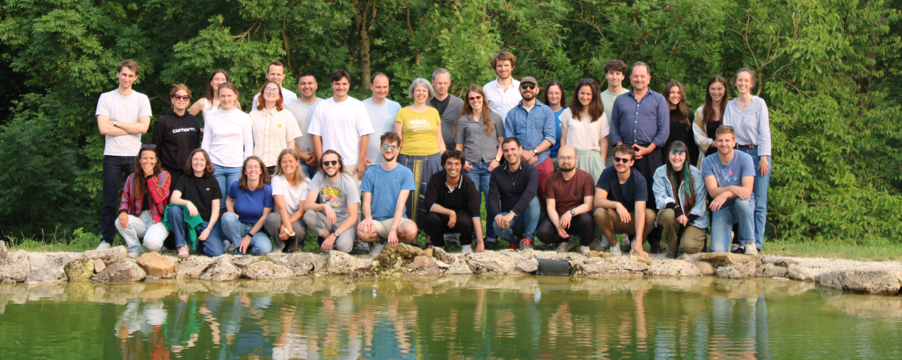

ARAMIS Lab
Building numerical models of brain diseases from multimodal patient data at Paris Brain Institute
The Aramis Lab brings together methodological researchers (computer scientists, applied mathematics) and medical experts (neurology, medical imaging) to build numerical models of brain diseases from multimodal patient data: medical imaging, clinical data and genomic data.
The Aramis Lab is a joint research team between CNRS, Inria, Inserm and Sorbonne University and belongs to the Paris Brain Institute (ICM), which is a neuroscience center based in the Pitié-Salpêtrière hospital in Paris, the largest adult hospital in Europe.
The team develops new data representations and statistical learning approaches that can integrate multiple types of data acquired in the living patient, including medical imaging, clinical and genomic data. In turn, these models shall allow for a better understanding of disease progression, and the development of new decision support systems for diagnosis, prognosis and design of clinical trials.
We are financially supported by these institutions.
Key methodological domains
Machine Learning
Statistical learning, Deep learning, Generative models, Bayesian models
Medical image processing
Magnetic resonance Imaging (MRI), Positron Emission Tomography (PET)
Morphometry and shape analysis
Riemannian Geometry, Diffeomorphisms
Longitudinal analysis
Non-linear mixed effects models, Riemannian geometry, Longitudinal shape models
Main applications
Alzheimer's disease
Clinical decision support systems, Disease progression models, Network alterations
Fronto-temporal dementia
Modeling the presymptomatic phase in genetic forms of the disease
Multiple sclerosis
Using multimodal neuroimaging to track disease progression
Parkinson's disease
Modeling disease progression, Computer-aided adjustment of treatment

2025 team retreat at la Ferme du Pignon, France